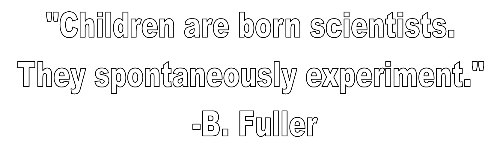
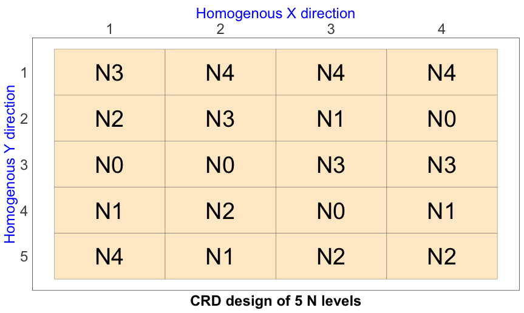
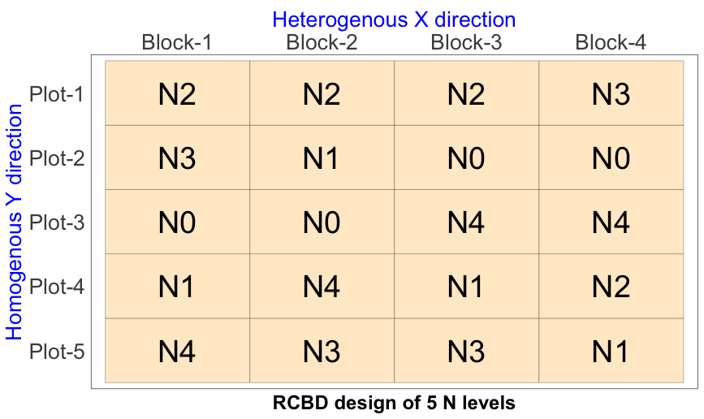
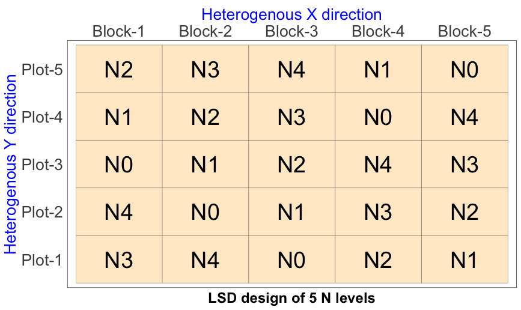
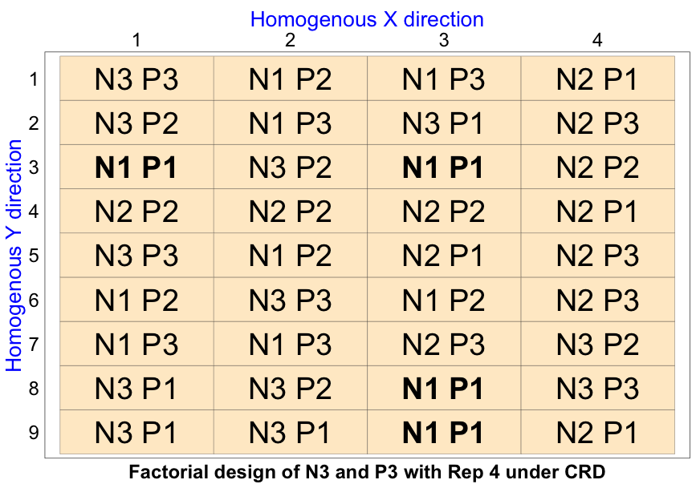
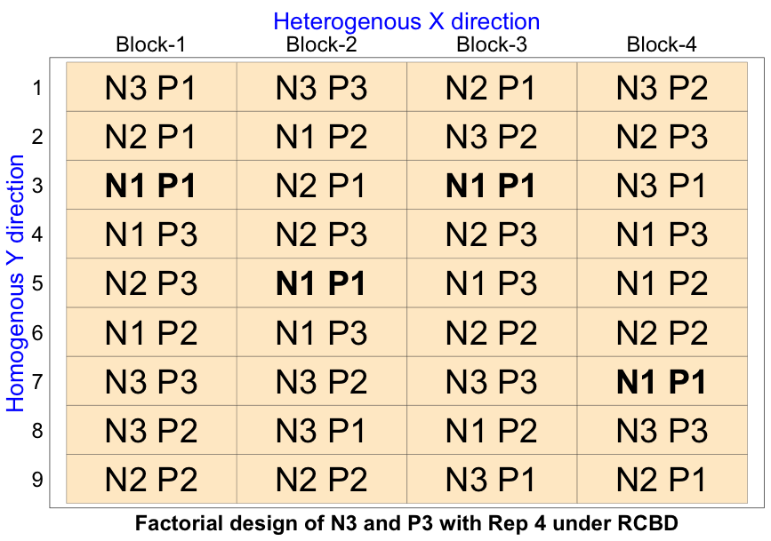
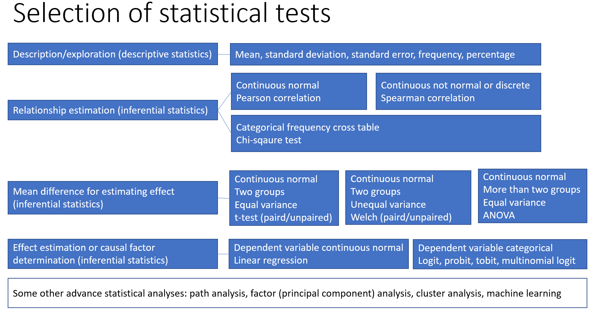
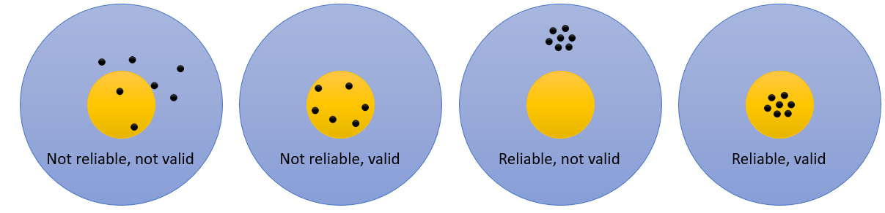

Research Methodology
2026-04-02
Presentation link: Scan

Research and Knowledge
- Knowledge is the stored information in our brain, books or internet that can be recalled when needed.
- Source of knowledge can be anything and anywhere.
- Knowdge generated using systematic (scientific) process is called science.
- Expression of science is technology. e.g. idea, practice, device, sofware, etc.

Research Types
- Fundamental research: to generate new knowledge (theory) or test existing theory. Fundamental research conducted to investigate the cause-effect relationship between variables is called experimental research.
- Applied research: to solve a specific problem using existing (indigenous/scientific) knowledge.
- Action research: applied research with a focus on immediate application in a local context.
- Behavioral research: to understand human/social behavior. e.g. perception, attitude, motivation, adoption, participation, training effectiveness, adaptation to climate change, etc.
Research Terminologies
- Reserch methodology: ~ How to conduct research?
- Research method: ~ A specific way to collect and analyze data.
- Research design: ~ A plan to conduct research. e.g. qualitative, quantitative, mixed method, experimental design, etc.
- Experiment: ~ A trial or setup involving treatments/interventions and experimental units.
- Experimental design: ~ A plan to apply treatments/interventions in an experiment. e.g. CRD, RCBD, Factorial, pretest-posttest control group design, timeseries design, etc.
Steps in Research
- Problem identification
- Setting research objectives
- Specififying research methodology
- Data collection and analysis
- Intrepretation and conclusion
Every step includes: Literature review
Ends the step with: Scientific report writing (presentation/publication)
Data to Law
- Data: Raw and unprocessed information (numbers, text, images, etc.). e.g. 20, 30, 40, etc.
- Information: Processed data with meaning. e.g. 20°C is the average temperature in April.
- Fact: Verifiable information. e.g. Water boils at 100°C.
- Evidence: Information that supports or refutes a claim. e.g. observed increase in crop growth with row planing.
- Hypothesis: A testable scientific guess about the relationship between variables. e.g. row planing enhances crop growth.
- Theory: Proven hypothesis. e.g. balannce fertilizer is better than imbalanced fertilizer for crop growth.
- Law: Proven theory with universal applicability. e.g. Law’s of learning: readyness, exercise, effect, etc.
Problem Identification
- Problem: A gap between what is and what should be.
- Problem is the guiding force of research. This ensures research quality and resource allocation.
- Sources of problem: literature review, and personal experience, observation, discussion with stakeholders, etc. also linked to the exsisting literature.
Problem must be consistent with the existing knowledge.
Problem must have newness (innovativeness/novelty).
Resarech Title and Objectives
Title: 10 - 15 words that reflect the research problem and objectives. Sometimes, it may include methodological aspects.
Example: “Effect of row planing on growth and yield of wheat in Bangladesh”, “Effect of training on income generation: A socio-psychological analysis using Kirkpatrick’s model”.
Titles should avoid dead words (investigate, study, effect, etc.), colon (as in the avove example) and abbreviations.
Objectives: Specific statements that describe what the research aims to achieve.
Example: To estimate the effect of training on the adoption of row planing among wheat farmers in Barishal region by the end of 2025.
Research Design: CRD, RCBD, LSD, Factorial
- CRD: One factor design where all units are homogeneous

RCBD
- One factor design where field is homogeneous in one direction but heterogeneous in another direction.

LSD
- One factor design where the field is heterogeneous in both directions.

Factorial Design
- Two factors or treatments and both are easy to manage or manipulate.
- For example, effect of N and P on rice yield.
- This design can follow any of the basic designs.
Factorial Design under CRD

Factorial Design under RCBD

Social Research Design
A. Pre-experimental design: no randomization. e.g. one group pretest-posttest design, one group posttest only design, static group comparison design (posttest only with control group)
B. True experimental design: randomization is possible and there is a control group. e.g. pretest-posttest control group design, posttest only control group design
C. Quasi-experimental design: randomization is not possible but there is a control group. e.g. non-equivalent control group design (has pretest), time series design
Scales of Measurement
- MCQ
- Likert scale
- Rating scale
- Semantic differential scale
- Sentence completion
- Open ended questions
- Ranking items
- Pairwise ranking
- Multidimensional scaling
Levels of Measurement
- Nominal: categories without order
- e.g. gender, religion, occupation, etc.
- Ordinal: categories with order
- e.g. education level, income group, etc.
- Interval: numerical values without a true zero
- e.g. temperature in Celsius or Fahrenheit
- Ratio: numerical values with a true zero
- e.g. height, weight, age, income
The level of measurement determines the appropriate statistical analysis and interpretation of data.
Statements for Likert Scale
Example: “I am satisfied with the training program on row planing for wheat farmers in Barishal region.”
Response:
- Strongely agree = 5,
- Agree = 4,
- Neutral = 3 [no opinion or undecided],
- Disagree = 2,
- Strongly disagree = 1
Constructing Statements
- Use present-tense, non-factual, and unambiguous statements relevant to the psychological construct.
- Keep statements short (under 20 words) and express one idea only.
- Use simple, clear, and direct language; avoid complex vocabulary.
- Avoid universal terms and double negatives (e.g., all, always, none, never).
- Use qualifiers sparingly (e.g., only, just, merely).
- Ensure balanced coverage across the affective scale; avoid statements most or few would endorse.
Population and Sampling
- Population: The entire group of individuals or items that meet certain criteria and are of interest in a research study. e.g. all wheat farmers in Barishal region.
- Sample: A subset of the population that is selected for participation in a research study. e.g. 100 wheat farmers from Barishal region.
- Sampling: The process of selecting a sample from the population.
- Sampling frame: A list or database of the population from which the sample is drawn. e.g. list of wheat farmers in Barishal region.
- Sampling unit: The individual or item that is selected for inclusion in the sample. e.g. a wheat farmer in Barishal region.
- Sampling error: The difference between the sample statistic and the population parameter due to random sampling
Sampling Methods
Probability sampling: Each member of the population has a known and non-zero chance of being selected. e.g. simple random sampling, systematic sampling, stratified sampling, cluster sampling.
Non-probability sampling: The probability of selection is unknown or zero for some members of the population. e.g. convenience sampling, purposive sampling, snowball sampling, quota sampling.
In cluster sampling a number of clusters are randomly selected for data collection.
In quota sampling quotas are set for different subgroups and data is collected until the quotas are filled.
Data Collection Methods/Tools
- Observation: A method of data collection that involves systematically watching and recording behavior or events.
- Questionnaire: A set of written questions used to collect data from respondents. e.g. structured questionnaire, semi-structured questionnaire, unstructured questionnaire.
- Interview: A method of data collection that involves direct interaction between the researcher and the respondent. e.g. structured interview, semi-structured interview, unstructured interview.
- Case study: An in-depth analysis of a single case or a small number of cases. e.g. a village, a farm, a farmer, etc.
- FGD, KII: Focus Group Discussion and Key Informant Interview
- PRA: Transect walk, social mapping, wealth ranking, preference ranking, venn diagram, etc.
Conducting Interviews
- Prepration: interview schedule/questionnaire, date and time, venue, consent etc.
- Rapport building: establish trust and comfort with the respondent.
- Data collection: ask questions, listen actively, and record responses accurately.
- Use probes and follow-up questions to clarify and expand responses.
- Avoid leading questions and bias in data collection.
- Ensure ethical considerations such as informed consent, confidentiality, and respect for the respondent’s rights.
- Never miss any questions and never guess any answers.
- Closing: thank the respondent and provide any necessary information about the next steps.
Data Processing and Analysis
Remember: Field editing and central editing are part of data processing.
Data processing: The steps taken to prepare raw data for analysis, including data cleaning, coding, and organization.
Data analysis: The application of statistical or qualitative techniques to interpret and draw conclusions from processed data. e.g. descriptive statistics, inferential statistics or hypothesis testing, thematic analysis, content analysis, etc.
Software for data processing and analysis: MS Excel, OnlyOffice, R, Python, SPSS, Stata, MATLAB, Minitab, NVivo, etc.
Selection of Statiscal Test

Hypothesis and Errors
- Null and Research Hypothesis: Null hypothesis (H0) is a statement of no effect or no relationship, while research hypothesis (H1) is a statement of an expected effect or relationship.
- Type I Error: Rejecting a null hypothesis when it is true.
- Type II Error: Not rejecting a null hypothesis when it is false.
Error Types
| Decision | H0 is True | H0 is False |
|---|---|---|
| Reject | Type I Error | Correct Decision |
| Accept | Correct Decision | Type II Error |
Validity and Reliability
Validity: The extent to which a research instrument measures what it is intended to measure. e.g. content validity, construct validity, criterion validity, etc.
Reliability: The consistency and stability of a research instrument over time and across different conditions. e.g. test-retest reliability, inter-rater reliability, split-half or internal consistency reliability, etc.

Data Types
- Quantitative data: Numerical data that can be measured and analyzed statistically. e.g. height, weight, income, etc.
- Discrete data: Quantitative data that can only take specific values. e.g. number of children, number of rows, etc.
- Continuous data: Quantitative data that can take any value within a range. e
- Qualitative data: Non-numerical data that can be analyzed thematically or content-wise. e.g. interview transcripts, field notes, etc.
Report Writing and Presentation
To be contiued in the next session.
Link: https://ruenresearch.com/blogs/scientific-writing.html#/title-slide
Scan and go through the presentation and resources for the next session.